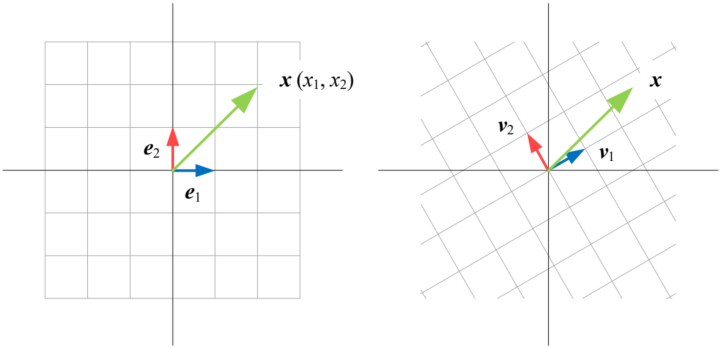
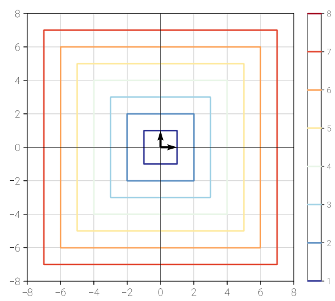
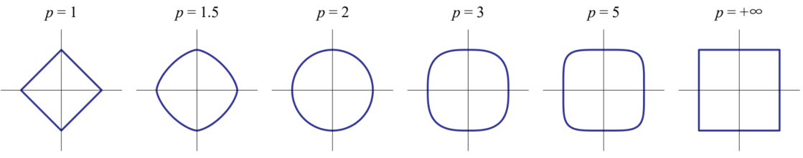
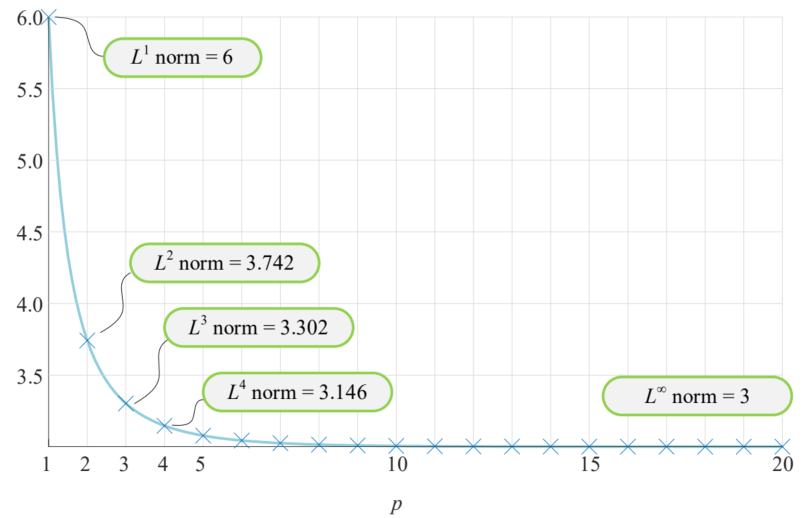
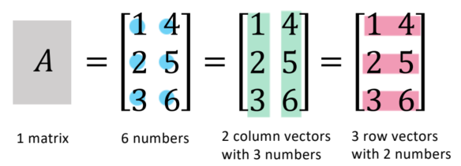
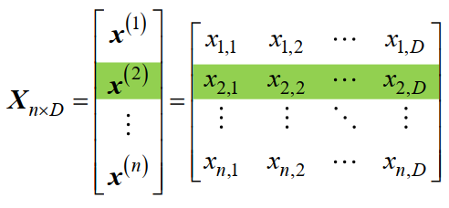
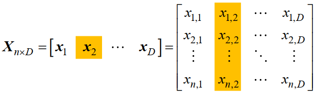
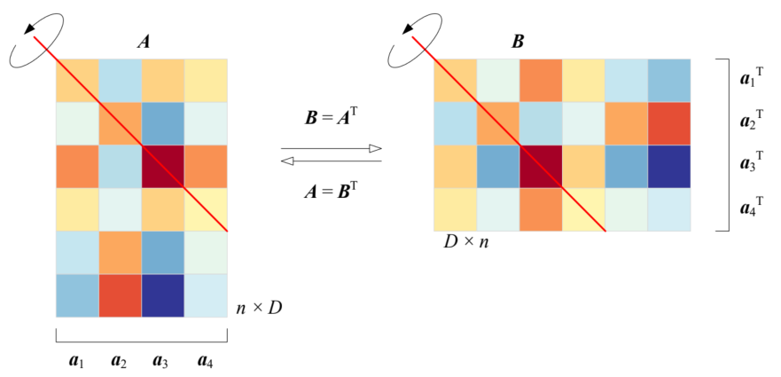

向量
向量 (Vector)
定义：向量 是一个 n 维的实数列向量。简单说，就是一竖排的 n 个数字。为了便于区分，向量使用粗体“”表示。
一个在维实数空间中的向量是一个维的列向量 (column vector)。它的形式如下：
其中，每一个元素都是一个实数（）。例如，在二维空间中的一个向量可以是。
理解：我们可以把一个维向量看作是维空间中的一个点或箭头。在二维平面直角坐标系中，向量既可以表示坐标为的一个点，也可以表示从原点指向该点的一个带箭头的线段。
向量运算
基本运算
向量加法 (Addition of vectors)
定义：两个维度相同的向量相加，其结果是一个新的向量。这个新向量的每一个元素都是原来两个向量对应元素相加的结果。这个过程也叫“逐坐标” (corresponding coordinates) 相加。
理解：在几何上，向量加法遵循“平行四边形法则”或“三角形法则”。例如，将两个向量的起点放在同一点，以它们为邻边作一个平行四边形，那么从起点出发的对角线所代表的向量就是这两个向量的和。
标量乘法 (Multiplication)
定义：一个标量（一个实数）与一个向量相乘，结果是一个新的向量。新向量的每个元素都是将标量与原向量的对应元素相乘得到的。
理解：标量乘法的作用是缩放向量。如果，向量被拉长；如果 缩短；如果 ，向量的方向会反向。
运算性质 (Properties)：
- 交换律 (Commutativity)：。两个向量相加的顺序不影响结果。
- 分配律 (Distributive properties)：；。
向量转置 (Transpose of vector)
定义：向量的转置操作，记作，会将一个列向量转换成一个行向量 (row vector)。
理解：转置在线性代数中至关重要。它的主要作用是为了让矩阵运算（特别是乘法）能够顺利进行。它本质上是一种改变数据“形状”以满足数学规则的操作。
内积与外积
向量内积 (Inner Product) - 结果为标量
定义：两个向量的内积（也叫点积dot product，对应元素相乘再求和）定义为：
例如，给定等维数向量，计算两者内积，最终会得到一个标量：
内积最重要的几何意义是衡量两个向量方向上的接近程度。它的数值大小与两个向量的夹角 密切相关。一个更具物理意义的内积定义是：
这里是向量的长度，是它们之间的夹角。
可以看出，向量内积就是一个向量的长度乘以另一个向量在其方向上的标量投影：
- 如果两个向量方向基本相同 ()，，内积是一个比较大的正数。
- 如果两个向量方向基本相反 ()，，内积是一个比较大的负数。
- 如果两个向量相互垂直 (），，内积就为0。
正交 (Orthogonal)：如果，则称向量正交。
正交就是“垂直”这个几何概念在 n 维空间中的代数推广。因为在二维或三维空间中，两个向量垂直，它们的点积（内积）就是0。非常优美，使得我们可以在高维空间中（例如1000维）去讨论和计算向量是否“垂直”，即使我们无法在脑海中想象出那个画面。
向量外积 (Outer Product) - 结果为矩阵
给定两个向量和（注意，它们的维度和可以不同），它们的外积定义为：
计算方法就是将列向量的每一个元素，分别与行向量的每一个元素相乘，构成一个矩阵。
例如，给定 () 和 ()：
线性空间
线性无关 (Linear independence)
- 定义：给定一组向量，如果存在一组不全为零的标量，使得它们的线性组合等于零向量，则称为线性相关 (linearly dependent)。反之，如果只有在所有标量都为0时才成立，那么这组向量是线性无关的。
- 理解：一组向量是线性无关的，意味着其中没有任何一个向量是多余的。你无法用其他的向量通过线性组合来表示出这个向量。每一个向量都提供了一个全新的、不可替代的“维度”或“方向”。
- 例如，在二维空间，向量。这组向量就是线性相关的，因为。可以由和创造出来，它没有提供任何新的方向信息，是多余的。
张成空间 (Span)
- 定义: 一组向量的所有可能的线性组合（即用任意实数作为系数与这些向量相乘再相加）所构成的集合，称为这组向量的张成空间 (Span)。
- 理解：Span就是这组向量通过伸缩和相加最多能够“到达”的空间。
- 例如：一个非零向量的Span是穿过原点和该向量的一条直线。两个线性无关（不共线）的向量在中的Span是一个穿过原点的平面。类似地，如果三个向量不共面（线性无关），它们的 Span 就是整个三维空间。
基 (Basis)
- 定义：维空间的一组基是一组向量，它同时满足以下两个条件：
- 这组向量是线性无关的（足够精简，没有冗余向量）。
- 这组向量张成整个空间（数量足以表示空间中的任何一个向量，即一组基有个向量）。
- 说明：仅要求线性无关是不够的，例如在三维空间中的一组向量线性无关，但是它无法张成整个空间，只能张成的一个子空间。因此它不能成为中的一组基。
- 理解：基就像是描述一个向量空间的“坐标系”。一旦确定了一组基，空间中的任何向量都可以被这组基唯一地表示出来。标准基对应的就是我们最熟悉的笛卡尔直角坐标系。
- 在二维平面 中, 最常用的基是标准基。它们就是我们熟悉的x轴和y轴的单位向量。它们显然是线性无关的 (x轴无法表示y轴), 并且它们可以张成整个平面 (平面上任何一点都可以用来表示)。
- 例子也是的一个基。它相当于一套“倾斜的”坐标系。虽然不那么直观, 但它同样满足线性无关和张成整个平面的条件, 所以它也是一个完全合法的基。

向量范数
在线性代数的世界里，我们有各种各样的向量，那么，如何衡量一个向量的“大小”或“长度”，并且从三维空间推广到任何维度的抽象空间？
- 定义：范数 (Norm) 是一个函数，它将一个向量映射到一个非负实数，并满足三个性质:
- (当时)，且 ||0|| = 0。(正定性：长度必须是正的，只有0向量长度为0)
- 。(齐次性：向量伸缩倍，其长度也变为倍)
- 。(三角不等式：两边之和大于第三边)
- 理解：范数本质上是“长度”这个概念的数学化和泛化。只要满足以上三条“常识性”的规定，一个函数就可以被称为范数，也就是一种合法的“长度度量衡”。
-范数
-范数 (L1-norm) - 绝对值之和
- 定义：所有元素绝对值之和。
- 理解：这通常被称为“曼哈顿距离” (Manhattan distance) 或“出租车距离”。当你在一个像曼哈顿那样的棋盘格城市里，你不能斜着走（欧氏距离），只能沿着街道（坐标轴）走。从原点到一个点 的 L1 距离就是 。
- 等距线：将平面直角坐标系中，L1范数相等的点连起来，构成与“等高线”类似的等“范数”线，如下图所示。2 维向量的范数在平面上的等距线 (iso-distance line) 为旋转正方形 (特殊的菱形)，满足，其中，c 为给定L1范数值，。
-范数
-范数 (L2-norm) - 欧氏距离
- 定义：高维空间中的勾股定理。
- 理解：这就是我们最熟悉的欧几里得距离（Euclidean distance）。对于二维向量, 它的L2范数是，这就是勾股定理。它计算的就是从原点到向量终点的直线距离。所以，L2范数是最符合我们物理直觉的“长度”定义。通常不带下标的就是指-范数。
- 等距线：如图所示，2 维向量的L2范数在平面上的等距线为正圆，满足，其中，c 为给定L2范数值，。
-范数
-范数 (Lp-norm) - 范数大家族
- 定义：范数不只有一种定义方式。-范数是一个更广泛更通用的范数家族。
- 当时，得到-范数 (L-infinity-norm)
- 理解：这被称为“切比雪夫距离” (Chebyshev distance) 或“最大范数”，也就是取所有元素中绝对值最大的那个。整个向量的“大小”完全由其最大的那个元素来决定。
- 等距线：2维向量的L∞范数在平面上的等距线为正方形，满足，其中， 为给定L∞范数值，。
 - 范数的等距线：在平面上，当取不同值时，-范数对应不同形状。
 - 范数的大小关系：用例子来说明，给定向量。
- 该向量的L1范数是三个坐标值的绝对值之和
- L2范数是向量的长度
- L3范数通过-范数的公式求得
下图为的范数随的变化，可以发现范数随增大而减小，最后收敛于3。
柯西-施瓦茨不等式 (Cauchy-Schwarz Inequality)
- 定义：
- 理解：这个不等式建立了内积和L2 范数之间最基本的关系。这个不等式本质是两个向量的内积，最大也超不过它们长度的乘积，这个最大值仅在两个向量方向完全相同或相反时取到。
- 前面提到。因为任何角度的余弦值的绝对值都小于等于 1（即 ），所以两边取绝对值，我们必然得到：。
矩阵运算
矩阵基础
- 矩阵 (Matrix)：一个的实数数组，记作。可以表示为：矩阵可以看做是由行向量或列向量构造：
 例如，矩阵可以写成一组上下叠放的行向量。其中，行向量为矩阵第行，。 矩阵也可以写成一组左右放置的列向量。其中，列向量为矩阵第列，。 - 矩阵转置 (Transpose)：将矩阵的行和列互换，记作。矩阵的转置是通过交换其行和列获得的。原始矩阵中位于第行、第列的元素移动到转置矩阵的第行、第列。如果 A 是一个矩阵，它的转置将是一个矩阵。例如：第一行变成了第一列，第二行变成了第二列。还需要记住的一个性质是，转置的转置会返回原始矩阵： 。性质：，
 - 对称矩阵 (Symmetric Matrix)：一个方阵（行数=列数），满足。这种矩阵沿主对角线（左上到右下）是“镜面对称”的。例如：
矩阵乘法
行列对齐：矩阵是一个的矩阵，矩阵是一个的矩阵，相乘得到的是一个的矩阵。的行数决定了的行数，的列数决定了的列数，如图所示。
理解矩阵乘法，通常会提到四个主要的视角。我们以一个具体的例子来说明这四个视角。
视角一：内积视角
元素视角/内积视角 (Row-Column View) 是我们学习矩阵乘法时最先接触到的方法，它告诉我们结果矩阵中的每一个数字是怎么算出来的。
结果矩阵中的第行第列的元素，等于矩阵的第个行向量和的第个列向量的内积
（点积，对应元素相乘再求和）：
例子：
如果我们将放在的左侧，行对齐；放在的上面，列对齐，那么在内积视角下，的每一个元素的计算就非常直观。如下图计算，抽出的第4行和的第7列，对应元素相乘再求和即可得到的值。
用途：这个视角主要用于数值计算，是计算机编程和手动验算时最直接的方法。
视角二：外积视角
外积视角 (Outer Product View) 将整个矩阵乘法看作是多个简单矩阵的叠加，是最高级的理解方式。
矩阵是的所有列向量和的对应行向量所构成的外积 (Outer Product) 之和：
其中是的列向量，是的行向量。
例子：
用途：这个视角将复杂的变换分解为一系列简单变换的和。每一项都是一个“秩为1”的矩阵，代表一种非常基础的投影或拉伸变换。这是许多高级算法如主成分分析(PCA)和奇异值分解(SVD)的理论基础。它告诉你，一个复杂的变换可以由几个简单的、基础的变换叠加而成。
视角三：列视角
列视角 (Column View) 是理解线性变换的关键，它告诉我们矩阵的列向量们是如何被矩阵 A 变换的。
结果矩阵的每一列，都是矩阵与矩阵的对应列向量相乘的结果。
更进一步说，的列向量是的列向量的线性组合，而组合的系数则是对应列的元素。这可以看做是一个加权和，例如要求的第列，那么把对应第列的元素取出来作为权重，对的所有列向量进行加权，最后相加合并为一个列向量，如下图所示。
例子：
- 的第1列是的列向量的线性组合，组合系数是的第1列的元素：
- 的第2列是的列向量的线性组合，组合系数是的第2列的元素：
线性变换的复合
让我们先把矩阵看作是对空间基向量的变换。
二维空间的标准正交基是 (x轴单位向量) 和 (y轴单位向量)。
的列向量可以看作是原空间的基向量经过变换后的位置：
- 的第一列
- 的第二列
矩阵的列向量和，其实就是原空间的基向量 经过变换后到达的新位置。这时，把的两个列向量看作是新的基，再进行变换，即：
得到最终的位置，即的列向量。
这就是或者说的本质：先对执行线性变换，再执行线性变换，从而得到。
每一次线性变换都将当前矩阵的列向量视为“新的基”，与变换矩阵相乘（或者说将基的元素作为权重，对变换矩阵的列向量进行加权求和）。
最后，还有一种“行视角 (Row View)”，列视角下的矩阵乘法以列向量为核心，是把的列向量元素作为权重， 对的列向量加权求和，得到新的列向量。行视角刚好相反，以行向量为核心，是把的行向量元素作为权重， 对的行向量加权求和，得到新的行向量。
正定矩阵
正定矩阵家族 (Definite Matrices) 的概念与对称矩阵和二次型、密切相关。矩阵的“定性”描述了二次型函数的值恒为正、恒为负、或正负不定的特性。
二次型
对于我们最熟悉的一元二次函数，它的图像是一个抛物线。只要系数，图像就是一个开口向上的完美“碗”状（抛物线），且有唯一的全局最小值，在处取得。除了最小值点，函数图像完全位于轴的上方。
这个例子就是正定矩阵所有概念的“原型”，它只不过是把这个简单、优美的“碗状”特性推广到了更高的维度。
现在，我们把输入从一个标量扩展到一个二维向量。与一维的系数对应的，是一个的对称矩阵。
那么，高维世界里的是什么呢？它就是二次型 (Quadratic Form)：
二次型是一个将向量映射到标量的函数。它的几何图像是一个高维曲面。矩阵的“定性”就描述了这个曲面的形状。
这个函数的图像不再是一条线，而是一个三维空间中的曲面。这个曲面的形状，就由矩阵来决定。
正定与半正定
对于不同的，的图像有几种形态，它们分别是：
几何图像 1：开口朝上的“碗”—— 正定矩阵
正定矩阵 (Positive Definite Matrix)：对于一个的对称矩阵，如果对所有非零向量，恒有，则称是正定的(Positive Definite, PD) 。(几何意义：二次型曲面是一个完美的“碗”)
让我们先看一个简单的矩阵，其中交叉项系数：
其二次型为。
- 代数上：由于平方项和永远是非负的，且它们的系数（1 和 2）都是正数，所以只 要不是零向量，这个函数的值必然大于零。
- 几何上：这个函数的图像是一个完美的椭圆抛物面。它看起来像一个底部在原点的、向上开 口的“碗”。这个“碗”非常规整，在原点处取得唯一的最小值0。
当一个对称矩阵A所对应的二次型曲面具有这种完美的“碗状”时，我们就称这个矩阵是正定的 (Positive Definite)。
如果矩阵不是正定的，曲面会是什么形状？
几何图像 2：“槽”或“山谷面”—— 半正定矩阵
半正定矩阵：对于一个 的对称矩阵，如果对所有向量，恒有，则称是半正定的 (Positive Semi-definite, PSD)。(几何意义：二次型曲面是一个“槽”，但永不低于水平面)。
例如：
这个曲面在方向上是抛物线，但在方向上是“平”的，形成一个槽状或U型管的形状。它的值永远不会是负数，但它可以等于（只要，无论是什么）。因为最小值点不唯一（整个轴都是最小值点），所以它不是一个完美的“碗”。这种矩阵被称为半正定的。
💬 评论区